Trang chủ / Cam Đường Canh

Cam Đường Canh chín trên cây
Không thúc chín, hái tay đúng mùa, khoảng tháng 11 âm lịch đến tháng 1. Hiện chưa vào mùa: đặt trước để được giữ hàng và báo đầu tiên khi cam chín. Chỉ bán theo thùng 5kg hoặc 10kg.
- 4,85/5 từ 106 đánh giá Shopee mùa trước
- VietGAP số 112/CN-TĐC-TT-20-0012, NATEK JSC cấp, hiệu lực đến 22/12/2028, theo TCVN 11892-1:2017. Giấy cấp dưới tên cũ của hợp tác xã (HTX Cây Ăn Quả Nhung Giang, nay là HTX Thế Hưng Organic)
- Đặt trước chưa cần thanh toán, nhà mình nhắn xác nhận khi có hàng
Khách nói gì về Cam Đường Canh
Trích nguyên văn đánh giá của khách đã mua trên Shopee mùa vừa rồi, không sửa chữ, tên khách được che bớt.
“Chất lượng rất ngon , ngọt , tươi đẹp có lựa chọn , giá siêu tốt . Nếu biết chất lượng tốt như vậy sẽ đặt gấp đôi hiện tại. 5sao”
“Cam ngon ngọt, mỏng vỏ, mọng nước. Ăn khác hẳn cam mình mua bên ngoài luôn huhu. Cả thùng 5kg nhưng bị vỡ có 2 trái bé thôi, do các trái khác đè vào nên vỡ...”
“Nhận được cam vẫn tươi rói ạ. Cam có vị ngọt thanh, dễ ăn. Mn nên thử nha”
“Đóng gói thùng xốp khá chắc chắn, cam ngon ngọt”
“Đã nhận sau 2 ngày. Quả mọng và ngọt ăn hết sẽ ủng hộ lần sau.”
“Cam rấtngon mọng nước ngọt vừa phải, vỏ mỏng giá hợp lí”
Nguồn: shop Shopee “Cam Đường Canh TH”, mùa 2025–2026.
Xem tất cả đánh giá trên Shopee ↗Khi nào có cam?
Cam chín tự nhiên trên cây nên ngày hái cụ thể nhà mình báo khi vườn sẵn sàng. Đặt trước là được báo đầu tiên.
Từ nụ hoa đến thùng cam trên tay bạn
Ảnh chụp thật trong vườn: cây được để ra hoa, đậu quả và chín theo đúng mùa. Cuộn chậm để xem từng bước.
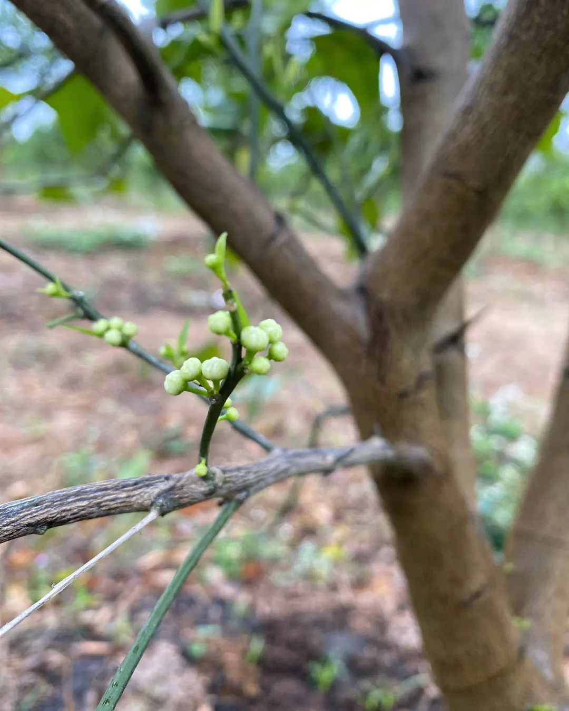
01Ra nụ đầu mùa
Cây bắt đầu ra những nụ hoa nhỏ xíu.
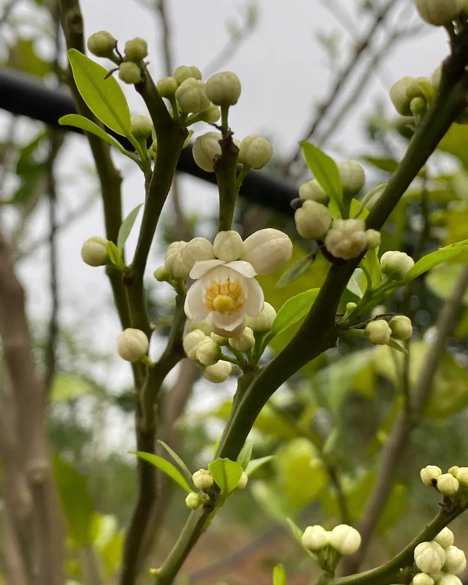
02Hoa nở trắng vườn
Hoa cam nở, thơm dịu mỗi sáng.
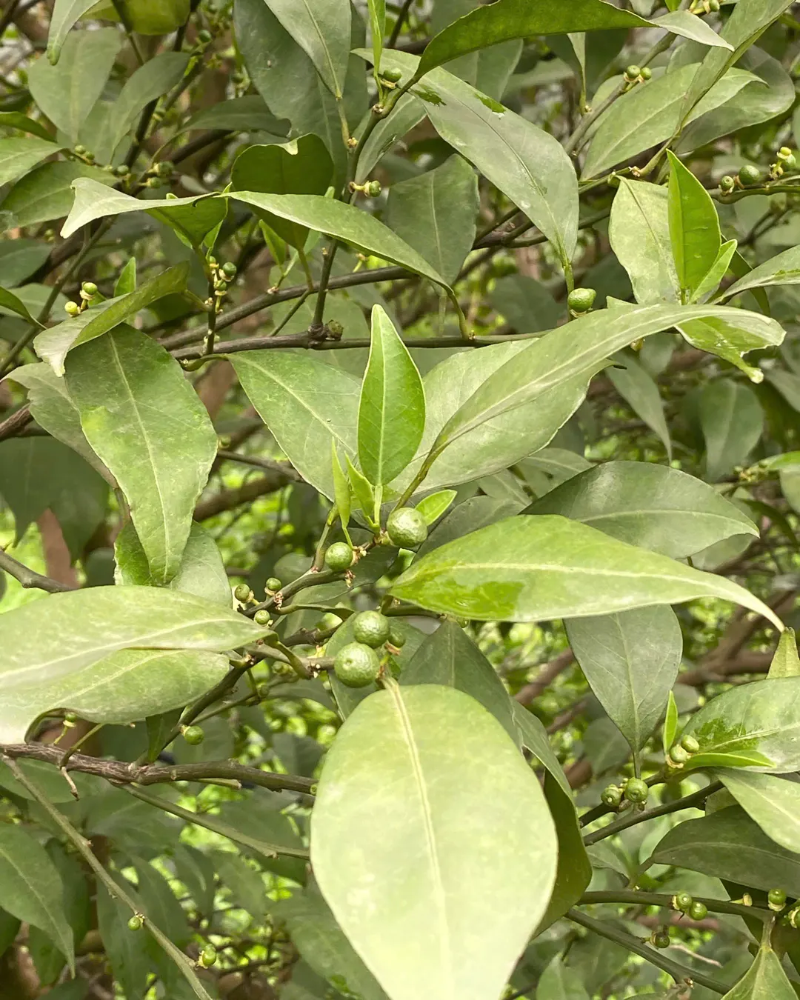
03Đậu quả non
Hoa rụng, quả non lớn dần qua nhiều tháng.
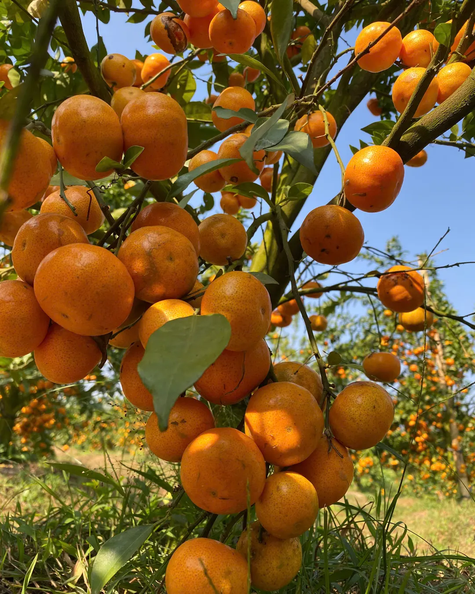
04Chín tự nhiên trên cây
Không thúc chín, đợi đủ ngày quả mới vàng và ngọt.
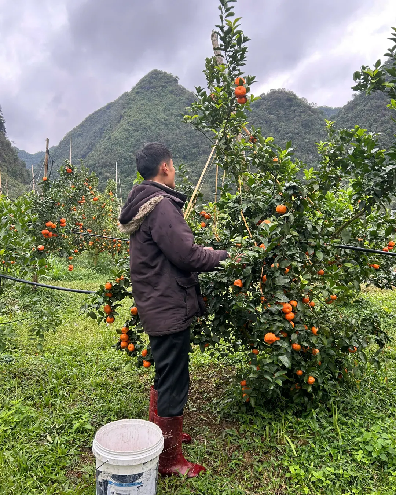
05Hái tay đúng mùa
Khoảng tháng 11 âm lịch đến tháng 1, hái từng quả.
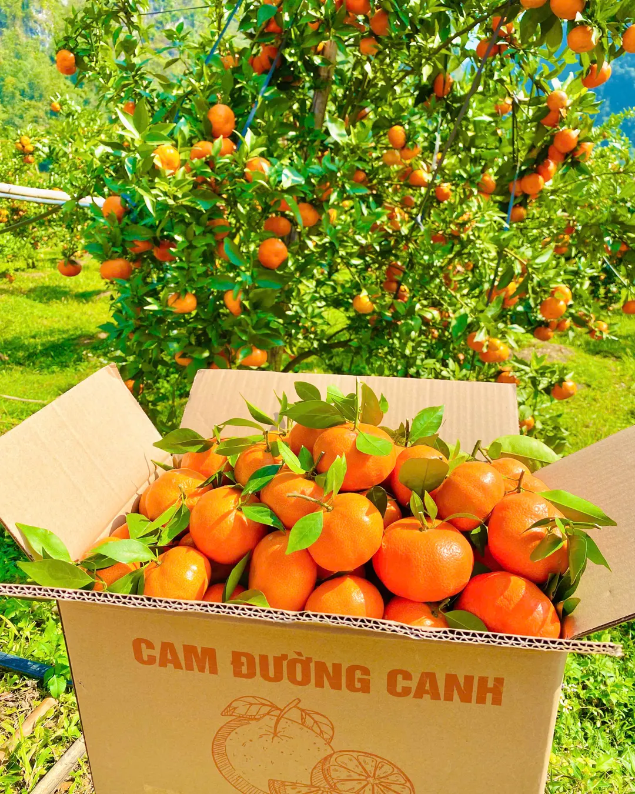
06Phân loại, đóng thùng
Xếp cẩn thận trong ngày, gửi đi khắp cả nước.
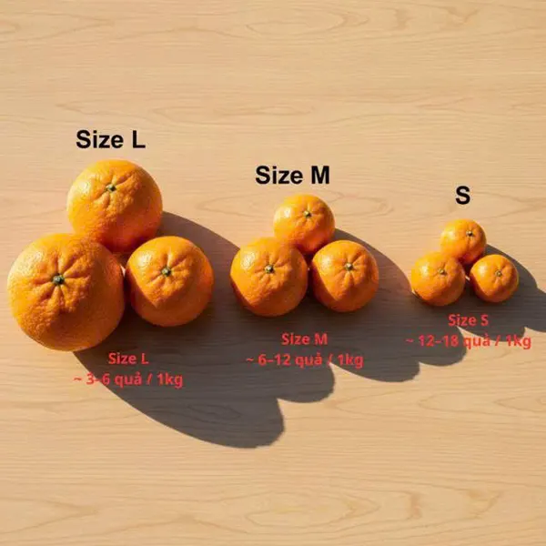
Cỡ L, M, S: chọn đúng nhu cầu
Cam được phân loại theo kích cỡ quả trước khi đóng thùng. Muốn thùng cỡ đều để biếu, hay cỡ nhỏ ăn hằng ngày, nhắn Zalo để nhà mình tư vấn khi vào mùa.
Hỏi về cỡ quả
Vườn cam giữa thung lũng núi đá
Ảnh chụp thật tại vườn của hợp tác xã ở xã Vũ Lăng, Lạng Sơn.
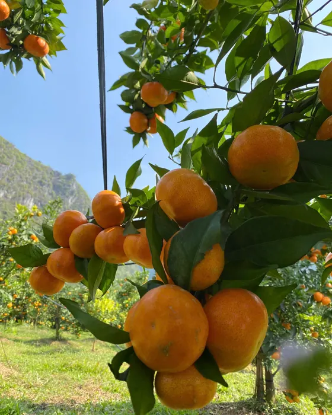
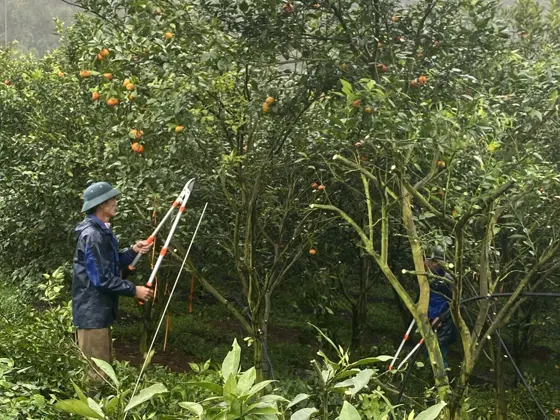
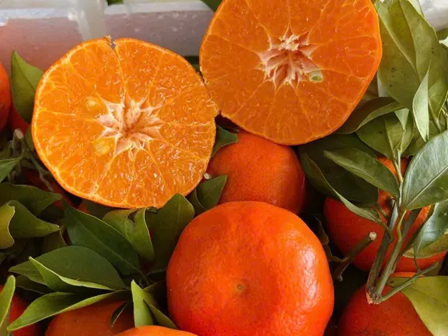
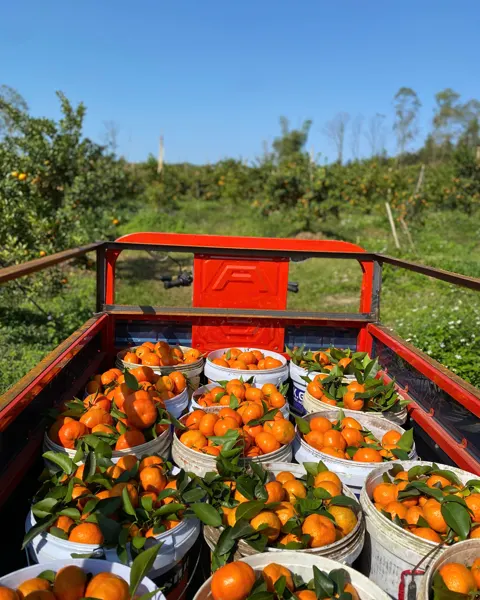
Nhìn lại và cập nhật vườn cam
Video quay thật tại vườn.
Nhìn lại vườn cam mùa trước
Mùa này: từ hoa đến quả non
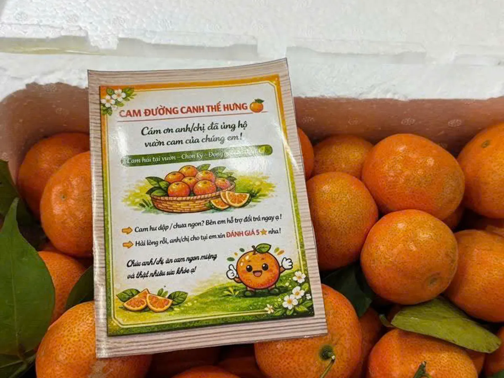
Giao tận nơi, lỗi là đổi
- Giao toàn quốc khi vào mùa. Qua đơn vị vận chuyển, thường 2–5 ngày tuỳ khu vực. Phí ship báo trước khi bạn xác nhận đơn.
- Đổi mới hoặc hoàn tiền nếu hàng hư hỏng do vận chuyển, giao sai loại/sai số lượng: quay video lúc mở thùng, báo Zalo trong 24 giờ.
- Đặt trước chưa cần thanh toán. Để lại thông tin, đến mùa nhà mình nhắn xác nhận đơn và cách thanh toán rồi mới giao.
Cam Đường Canh mùa nào có hàng? Đặt trước được không?
Chỉ thu hoạch theo mùa, khoảng tháng 11 âm lịch đến tháng 1 năm sau. Ngoài mùa vẫn đặt trước được: để lại thông tin, đến mùa nhà mình báo có hàng đầu tiên.
Sản phẩm có chứng nhận an toàn không?
Cam Đường Canh đạt chứng nhận VietGAP (số 112/CN-TĐC-TT-20-0012), cấp bởi NATEK JSC cho hợp tác xã (tên cũ HTX Cây Ăn Quả Nhung Giang, nay là HTX Thế Hưng Organic), theo TCVN 11892-1:2017, hiệu lực đến 22/12/2028.
Ở xa (ngoại tỉnh, vùng núi) có giao được không?
Giao hàng toàn quốc qua đơn vị vận chuyển khi vào mùa, thường 2–5 ngày tuỳ khu vực. Phí ship theo bảng giá đơn vị vận chuyển, báo trước khi bạn xác nhận đặt hàng.
Hàng lỗi hoặc giao sai thì đổi trả thế nào?
Vì là thực phẩm nên không nhận đổi trả hàng đã mở/đã dùng. Được đổi hàng mới hoặc hoàn tiền nếu hàng hư hỏng do vận chuyển, giao sai loại/sai số lượng, hoặc lỗi từ khâu sản xuất: quay video lúc mở hàng và báo Zalo trong 24 giờ kể từ khi nhận hàng.
Có bán lẻ theo kg không?
Cam chỉ bán theo thùng 5kg hoặc 10kg để đảm bảo đóng gói, vận chuyển an toàn.
Giữ một thùng cam cho mùa mới
Thùng 5kg 275.000đ · thùng 10kg 500.000đ. Đặt trước để được báo và giao sớm nhất khi cam chín. Cần Tinh Bột Sắn Dây (có sẵn quanh năm)?
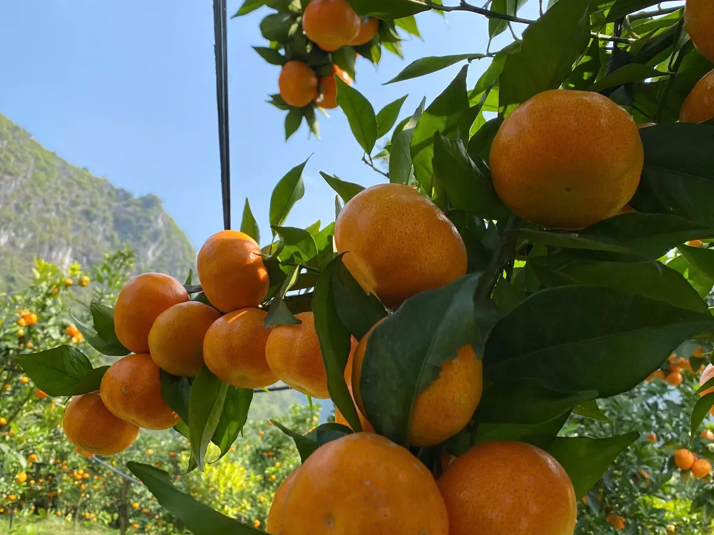